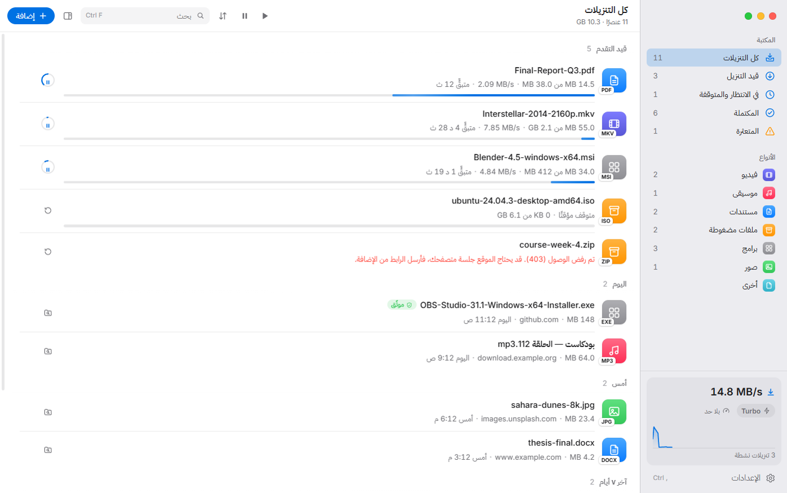
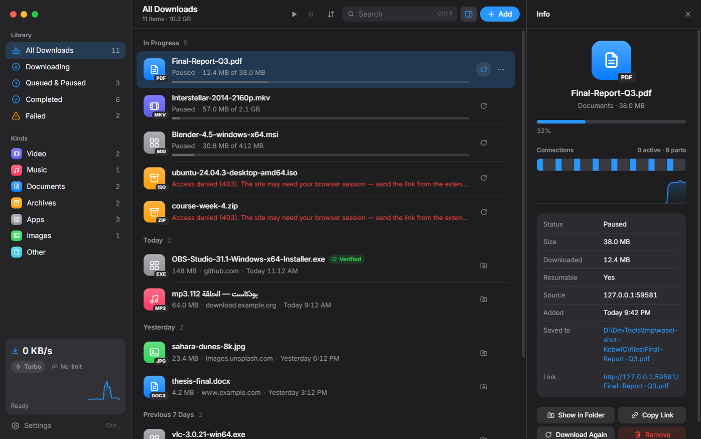
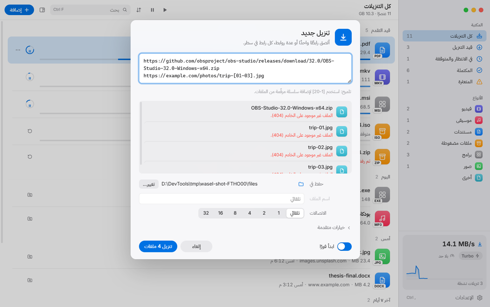

يعمل حيث تفشل البرامج الأخرى
يعرّف نفسه كمتصفح حديث، ويحمل ملفات تعريف الارتباط عبر التحويلات، ويثق بشهادات Windows.

مدير تنزيلات سريع ومجاني لنظام Windows. ينزّل أي رابط، حتى روابط الصفحات والبث، بـ 32 اتصالًا في وضع Turbo، ويستأنف تلقائيًا، ويعمل مع متصفحك.

السرعة
يقسّم واصل الملف ديناميكيًا: عندما ينهي اتصال جزءه، يأخذ نصف أكبر جزء متبقٍّ، فلا يبقى أي اتصال عاطلًا. والملف يُكتب مباشرة في مكانه دون خطوة دمج.

الموثوقية
إعادة محاولة تلقائية مع استئناف من حيث توقف، حتى بعد إغلاق الجهاز. يتعرف واصل على الروابط منتهية الصلاحية وعلى صفحات تسجيل الدخول بدل أن يحفظها كملفات تالفة.
يعرّف نفسه كمتصفح حديث، ويحمل ملفات تعريف الارتباط عبر التحويلات، ويثق بشهادات Windows.
يقرأ الاسم الحقيقي من الخادم، بما في ذلك الأسماء العربية، بدل «download.php».
ألصق بصمة SHA-256 أو MD5 ويتحقق واصل من الملف تلقائيًا بعد انتهائه.
المتصفح
إضافة لـ Chrome وEdge وBrave وFirefox تلتقط التنزيلات وترسلها مع ملفات تعريف الارتباط وصفحة الإحالة، فتعمل حتى التنزيلات التي تتطلب تسجيل الدخول. كل شيء يبقى على جهازك.

شروحات
شروحات متحركة خطوة بخطوة. اختر شرحًا، وسيعمل تلقائيًا، أو تنقّل بين المشاهد بنفسك.
التطبيق غير موقّع رقميًا بعد. اضغط «More info» ثم «Run anyway»، فقط إن نزّلت الملف من هذه الصفحة أو من صفحة الإصدارات الرسمية.
الموقع يحتاج جلسة تسجيل دخولك. ثبّت الإضافة وابدأ التنزيل من المتصفح، فترسل الإضافة ملفات تعريف الارتباط إلى واصل.
لا مشكلة. يفتح واصل الصفحة ويعرض الفيديوهات والملفات الموجودة فيها لتختار ما تريد، أو ينزّل الفيديو الرئيسي تلقائيًا.
فعّل Turbo من أسفل الشريط الجانبي: 32 اتصالًا لكل ملف دون حد للسرعة. بعض الخوادم تحدّ عدد الاتصالات، وواصل يتكيف معها تلقائيًا.
واصل يعمل في علبة النظام قرب الساعة وتستمر التنزيلات. انقر أيقونته لإظهاره، أو اختر «إنهاء واصل» من قائمتها للخروج.
التحديث التلقائي يعمل ابتداءً من الإصدار 2. ثبّت هذا الإصدار مرة واحدة يدويًا، وبعدها تصلك التحديثات تلقائيًا.
وأكثر
نعم، مجاني بالكامل ومفتوح المصدر، دون إعلانات أو تتبّع.
كانت الإصدارات القديمة ترسل طلبات دون هوية متصفح ودون ملفات تعريف الارتباط، فترفضها مواقع كثيرة. الإصدار 2 يعالج ذلك، والإضافة ترسل جلسة تسجيل الدخول.
ابتداءً من الإصدار 2 يتحدث واصل تلقائيًا. إذا كان لديك الإصدار 1.2 أو أقدم، فنزّل هذا الإصدار وثبّته مرة واحدة فوق القديم؛ ستبقى قائمة تنزيلاتك.
لا. الإضافة تتحدث فقط مع واصل على جهازك. التحقق من التحديثات هو الاتصال الوحيد بخوادم GitHub.
Windows 10 و11، 64-بت. مجاني تمامًا.
تنزيل لنظام Windows